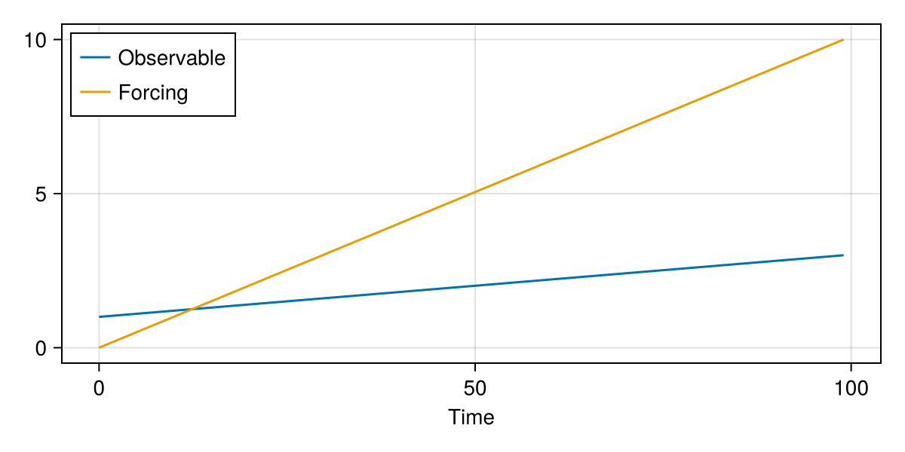
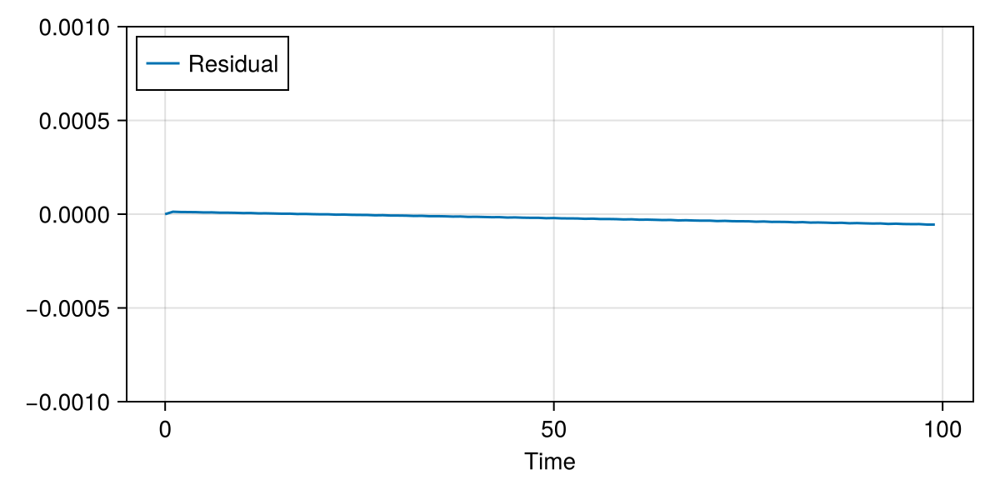
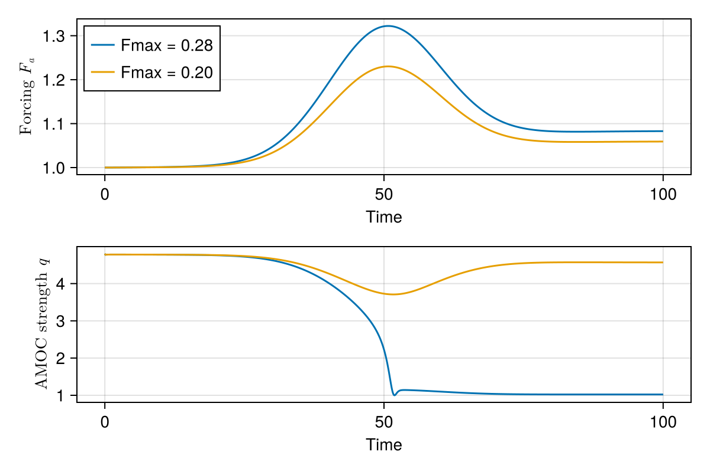
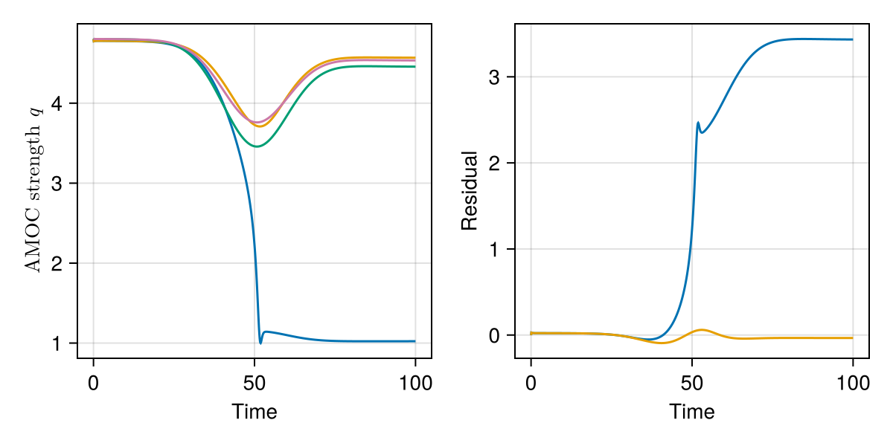

Example
Linear system, linear forcing
As a very boring example, consider an observable timeseries obs and a forcing timeseries forcing that both increase linearly in time.
obs = range(1.0, 3.0, length=100)
forcing = range(0.0, 10.0, length=100)
time = 0.0:99.0
f = Figure(size=(600, 300)); ax = Axis(f[1,1],
Here, the relationship between the observable and the forcing is $x(t) = 1 + 0.2 F(t)$, so the response is perfectly linear and a simple RelaxNullModel can explain the response.
using TippingTest
t_tr = (30, 70) # Transition phase limits (arbitrarily chosen)
guess = [1.0, 1.0] # Initial guess for the null model parameters
test = tipping_test(obs, forcing, time, t_tr;
model=RelaxNullModel(obs[1], guess))
println("Fitted parameters: $(test.nullmodel.params)")::warning file=../../../.julia/packages/SciMLBase/hLfdZ/src/integrator_interface.jl,line=735::Verbosity toggle: dt_epsilon %0A At t= 40.09589662947811, dt was forced below floating point epsilon 7.105427357601002e-15, and step error estimate = NaN. Aborting. There is either an error in your model specification or the true solution is unstable (or the true solution can not be represented in the precision of Float64.
::warning file=../../../.julia/packages/SciMLBase/hLfdZ/src/integrator_interface.jl,line=735::Verbosity toggle: dt_epsilon %0A At t= 59.303733145856654, dt was forced below floating point epsilon 7.105427357601002e-15, and step error estimate = NaN. Aborting. There is either an error in your model specification or the true solution is unstable (or the true solution can not be represented in the precision of Float64.
::warning file=../../../.julia/packages/SciMLBase/hLfdZ/src/integrator_interface.jl,line=735::Verbosity toggle: dt_epsilon %0A At t= 2.2531109948827166, dt was forced below floating point epsilon 4.440892098500626e-16, and step error estimate = NaN. Aborting. There is either an error in your model specification or the true solution is unstable (or the true solution can not be represented in the precision of Float64.
::warning file=../../../.julia/packages/SciMLBase/hLfdZ/src/integrator_interface.jl,line=735::Verbosity toggle: dt_epsilon %0A At t= 22.8695536045401, dt was forced below floating point epsilon 3.552713678800501e-15, and step error estimate = NaN. Aborting. There is either an error in your model specification or the true solution is unstable (or the true solution can not be represented in the precision of Float64.
::warning file=../../../.julia/packages/SciMLBase/hLfdZ/src/integrator_interface.jl,line=735::Verbosity toggle: dt_epsilon %0A At t= 6.418534882794937, dt was forced below floating point epsilon 8.881784197001252e-16, and step error estimate = NaN. Aborting. There is either an error in your model specification or the true solution is unstable (or the true solution can not be represented in the precision of Float64.
::warning file=../../../.julia/packages/SciMLBase/hLfdZ/src/integrator_interface.jl,line=735::Verbosity toggle: dt_epsilon %0A At t= 6.418534882794937, dt was forced below floating point epsilon 8.881784197001252e-16, and step error estimate = NaN. Aborting. There is either an error in your model specification or the true solution is unstable (or the true solution can not be represented in the precision of Float64.
::warning file=../../../.julia/packages/SciMLBase/hLfdZ/src/integrator_interface.jl,line=735::Verbosity toggle: dt_epsilon %0A At t= 35.53220118417951, dt was forced below floating point epsilon 7.105427357601002e-15, and step error estimate = NaN. Aborting. There is either an error in your model specification or the true solution is unstable (or the true solution can not be represented in the precision of Float64.
::warning file=../../../.julia/packages/SciMLBase/hLfdZ/src/integrator_interface.jl,line=735::Verbosity toggle: dt_epsilon %0A At t= 11.191200464677294, dt was forced below floating point epsilon 1.7763568394002505e-15, and step error estimate = NaN. Aborting. There is either an error in your model specification or the true solution is unstable (or the true solution can not be represented in the precision of Float64.
::warning file=../../../.julia/packages/SciMLBase/hLfdZ/src/integrator_interface.jl,line=735::Verbosity toggle: dt_epsilon %0A At t= 18.833065338406858, dt was forced below floating point epsilon 3.552713678800501e-15, and step error estimate = NaN. Aborting. There is either an error in your model specification or the true solution is unstable (or the true solution can not be represented in the precision of Float64.
::warning file=../../../.julia/packages/SciMLBase/hLfdZ/src/integrator_interface.jl,line=735::Verbosity toggle: dt_epsilon %0A At t= 6.899349798301749, dt was forced below floating point epsilon 8.881784197001252e-16, and step error estimate = NaN. Aborting. There is either an error in your model specification or the true solution is unstable (or the true solution can not be represented in the precision of Float64.
::warning file=../../../.julia/packages/SciMLBase/hLfdZ/src/integrator_interface.jl,line=735::Verbosity toggle: dt_epsilon %0A At t= 6.899349798301749, dt was forced below floating point epsilon 8.881784197001252e-16, and step error estimate = NaN. Aborting. There is either an error in your model specification or the true solution is unstable (or the true solution can not be represented in the precision of Float64.
::warning file=../../../.julia/packages/SciMLBase/hLfdZ/src/integrator_interface.jl,line=735::Verbosity toggle: dt_epsilon %0A At t= 1.4699354302687913, dt was forced below floating point epsilon 2.220446049250313e-16, and step error estimate = NaN. Aborting. There is either an error in your model specification or the true solution is unstable (or the true solution can not be represented in the precision of Float64.
::warning file=../../../.julia/packages/SciMLBase/hLfdZ/src/integrator_interface.jl,line=735::Verbosity toggle: dt_epsilon %0A At t= 8.790894119070138, dt was forced below floating point epsilon 1.7763568394002505e-15, and step error estimate = NaN. Aborting. There is either an error in your model specification or the true solution is unstable (or the true solution can not be represented in the precision of Float64.
::warning file=../../../.julia/packages/SciMLBase/hLfdZ/src/integrator_interface.jl,line=735::Verbosity toggle: dt_epsilon %0A At t= 2.5509148020341046, dt was forced below floating point epsilon 4.440892098500626e-16, and step error estimate = NaN. Aborting. There is either an error in your model specification or the true solution is unstable (or the true solution can not be represented in the precision of Float64.
::warning file=../../../.julia/packages/SciMLBase/hLfdZ/src/integrator_interface.jl,line=735::Verbosity toggle: dt_epsilon %0A At t= 0.5312647384407748, dt was forced below floating point epsilon 1.1102230246251565e-16, and step error estimate = NaN. Aborting. There is either an error in your model specification or the true solution is unstable (or the true solution can not be represented in the precision of Float64.
::warning file=../../../.julia/packages/SciMLBase/hLfdZ/src/integrator_interface.jl,line=735::Verbosity toggle: dt_epsilon %0A At t= 2.6848010064323495, dt was forced below floating point epsilon 4.440892098500626e-16, and step error estimate = NaN. Aborting. There is either an error in your model specification or the true solution is unstable (or the true solution can not be represented in the precision of Float64.
::warning file=../../../.julia/packages/SciMLBase/hLfdZ/src/integrator_interface.jl,line=735::Verbosity toggle: dt_epsilon %0A At t= 2.631969140328899, dt was forced below floating point epsilon 4.440892098500626e-16, and step error estimate = NaN. Aborting. There is either an error in your model specification or the true solution is unstable (or the true solution can not be represented in the precision of Float64.
::warning file=../../../.julia/packages/SciMLBase/hLfdZ/src/integrator_interface.jl,line=735::Verbosity toggle: dt_epsilon %0A At t= 1.7323369515219824, dt was forced below floating point epsilon 2.220446049250313e-16, and step error estimate = NaN. Aborting. There is either an error in your model specification or the true solution is unstable (or the true solution can not be represented in the precision of Float64.
::warning file=../../../.julia/packages/SciMLBase/hLfdZ/src/integrator_interface.jl,line=735::Verbosity toggle: dt_epsilon %0A At t= 0.17987519519124703, dt was forced below floating point epsilon 2.7755575615628914e-17, and step error estimate = NaN. Aborting. There is either an error in your model specification or the true solution is unstable (or the true solution can not be represented in the precision of Float64.
::warning file=../../../.julia/packages/SciMLBase/hLfdZ/src/integrator_interface.jl,line=735::Verbosity toggle: dt_epsilon %0A At t= 0.6120839207405223, dt was forced below floating point epsilon 1.1102230246251565e-16, and step error estimate = NaN. Aborting. There is either an error in your model specification or the true solution is unstable (or the true solution can not be represented in the precision of Float64.
Fitted parameters: [0.20000682592556884, 0.0006519213621323104]As expected, the fitted parameters are $\alpha=0.2$ for the sensitivity and $m \approx 0$ for the inertia.
The residual is close to zero for all times, meaning that linear response can fully explain the time evolution of the observable and hence no tipping occurs.
f = Figure(size=(600, 300)); ax = Axis(f[1,1],
lines!(ax, time, test.residual, label="Residual")
ylims!(ax, -1e-3, 1e-3)
Ocean circulation box model
Consider Stommel's ocean box model (Stommel, 1961) of the thermohaline circulation, given in non-dimensional form as a 2-dimensional system of ODEs:
\[\begin{align} \dot{x} &= -\alpha(x-1) - x(1+\mu(x-y)^2) \nonumber \\ \dot{y} &= F_a - y(1+\mu(x-y)^2) \end{align}\]
Here $x$ and $y$ represent the meridional temperature and salinity difference between the southern and northern box, respectively. The freshwater flux $F_a$ is the main forcing parameter; typical values for the model parameters are $\alpha=360$ and $\mu=6.25$.
The relevant observable is the overturning strength $q = 1 + \mu (x-y)^2$. We are interested in the response to the forcing parameter $F_a$.
The model can be defined as a type of ODE system using CriticalTransitions.jl, which is based on the interface of DynamicalSystems.jl.
using CriticalTransitions
using TippingTest
function stommel(u,p,t)
x, y = u
F, alpha, mu = p
dx = - alpha*(x - 1) - x*(1 + mu*(x - y)^2)
dy = F - y*(1 + mu*(x - y)^2)
return SVector{2}(dx, dy)
end
p = [1.0, 360, 6.25] # Standard model parameters
u0 = [0.99, 0.21] # Initial state
base_system = CoupledODEs(stommel, u0, p)2-dimensional CoupledODEs
deterministic: true
discrete time: false
in-place: false
dynamic rule: stommel
ODE solver: Tsit5
ODE kwargs: (abstol = 1.0e-6, reltol = 1.0e-6)
parameters: [1.0, 360.0, 6.25]
time: 0.0
state: [0.99, 0.21]
Let us also write a function that computes the AMOC strength timeseries from simulation output:
amoc(traj; mu=6.25) = 1 .+ mu .*(traj[1][:,1] .- traj[1][:,2]) .^2amoc (generic function with 1 method)Generate trajectory data
First, we need to generate trajectory data of the model under a given forcing timeseries. Systems with time-dependent forcing parameters can easily be constructed using the RateSystem type of CriticalTransitions.jl.
Suppose the freshwater forcing undergoes an increase followed by a decrease to a final level that is larger than its original value. An idealized protocol is given by the following function, combining a Gaussian bump with a hyperbolic tangent:
protocol(t) = exp(-50*(t-0.5)^2) + 0.3*(0.5*tanh(5*(t-0.5))+0.5)
fp = ForcingProfile(protocol, (0.0,1.0))CriticalTransitions.ForcingProfile{typeof(Main.protocol), Float64}(Main.protocol, (0.0, 1.0))We consider two cases, differing only in the amplitude of the forcing fmax. For each case, we construct the RateSystem and run the trajectory:
fmax = [0.28, 0.20]
rs1 = RateSystem(base_system, fp, 1; forcing_duration=100.0, forcing_scale=fmax[1])
rs2 = RateSystem(base_system, fp, 1; forcing_duration=100.0, forcing_scale=fmax[2])
forcing1 = parameter.(rs1, 0.0:0.1:100.0, 1)
forcing2 = parameter.(rs2, 0.0:0.1:100.0, 1)
tr1 = trajectory(rs1, 100.0, u0)
tr2 = trajectory(rs2, 100.0, u0)
Apply tipping test
time = 0.0:0.1:100
t_tr = (30, 70)
obs1 = amoc(tr1)
obs2 = amoc(tr2)
test1 = tipping_test(obs1, forcing1, time, t_tr;
model=RelaxNullModel(obs1[1], [-1.0, 2.0]))
test2 = tipping_test(obs2, forcing2, time, t_tr;
model=RelaxNullModel(obs2[1], [-1.0, 2.0]))
The linear null model can approximately describe the evolution of the case with Fmax=0.2, but the residual grows continually in the case Fmax=0.28, indicative of a positive nonlinear feedback. We therefore classify the latter case as a tipping event.